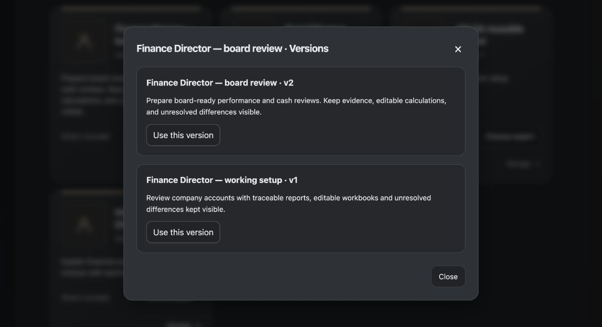

On your computer
macOS or Linux, Python 3.11+, uv and an installed Claude Code client. Your AI account connects through its own sign-in.
Run xPerfect. Connect your AI. Give an expert its files and skills. Come back to the same workspace—from the app, Codex or Claude.
A workspace keeps the files. A named AI Worker keeps its own work and native history. For the five professional starters in this guide, use Claude Code on your computer—their current supported Skill route.
macOS or Linux, Python 3.11+, uv and an installed Claude Code client. Your AI account connects through its own sign-in.
The public Linux Arm64 and AMD64 packages start without building images. Use the worker routes it actually offers; host-only starters are not automatically available inside it.
Hosted use needs trusted TLS, admitted users and configured storage. Windows host startup remains unqualified; hosted identity and storage need their own setup.
Download the public source ↓. Open Terminal in that folder. Install Python 3.11+, uv and Claude Code.
./xperfect startChoose an unlock password when asked, or save the generated one. Your saved work lives outside the source folder.
Use the address printed in Terminal, normally http://127.0.0.1:8780. Enter the app password, then connect an AI account. A running page alone is not a connected AI.
With Python 3.11+ and Docker running:
./xperfect start --dockerUse the printed app address and ui_password in its named private credentials file. Keep that file private; it also holds MCP credentials. Native worker choices, account setup and available abilities follow the package's actual configuration.
./xperfect start --docker --name xperfect-demo \
--state-dir ~/xperfect-demo --ui-port 18780 --mcp-port 18767Use those printed addresses for that instance. Never start two instances against the same state. Startup selects the matched linux/arm64 or linux/amd64 image pair for your Docker daemon.
Follow the hosted deployment guide. Opening a local port to the Internet is not a hosted setup; do not bypass its identity, TLS or filesystem requirements.
Ready means connected. Your first completed task proves it can do the work.
Use your intended account and exact model. The current package records gpt-6.1-sol for Codex and claude-opus-5-5 for Claude. An explicit choice takes precedence; no silent switch. A native host Codex worker without an explicit model uses its account default. Provider sign-in and genuine access confirmations remain yours. Host workers have your OS permissions; container workers use isolated workspaces. Your AI provider receives the task content needed for its work.
Start with a packaged profession, create your own worker, or continue an existing one. A saved expert setup creates a new worker; reusing a worker continues its own files and history.

The Finance example asks for a board review, editable calculations, a variance bridge and a cash scenario. Its source includes an unexplained cash difference; a useful result must keep that uncertainty visible.

In Connections → Use xPerfect from another AI app, choose Codex and copy the generated setup. Use Automatic when offered; otherwise follow that instance's Manual instructions. Keep any private key out of chat, URLs and Git.
Show me the packaged Finance Director and its included abilities. Use my selected Ready Claude Code account on this host, create a new worker from that exact setup, and let me review the abilities it needs. Use the Finance example files I attach to prepare the performance and cash review. Return the report and editable calculations. Keep the worker for my follow-up.
The controlling client can be Codex while the selected worker is Claude Code. These are separate roles. Exact client and API walkthrough.
In Connections → Use xPerfect from another AI app, choose Claude Code and copy the generated setup. Follow the normal client trust/permission steps; they do not grant new provider or workspace access by themselves.
Show me the packaged Finance Director and its included abilities. Use my selected Ready Claude Code account on this host, create a new worker from that exact setup, and let me review the abilities it needs. Use the Finance example files I attach to prepare the performance and cash review. Return the report and editable calculations. Keep the worker for my follow-up.
Use the returned worker and run IDs for status, guidance and files. Do not create a second worker merely to ask whether the first finished.
The app's generated command is the source of your actual state directory and endpoint. The host stdio route is ./xperfect mcp; local Docker uses its separately printed HTTP MCP address and private bearer key. Do not apply a host stdio recipe to a Docker instance. Follow the matching connection recipe.
An existing worker keeps its own native history and files. A new template worker is a separate identity. A same-owner copy may keep a Ready compatible selected account reference, but never copies provider credentials, browser sign-ins or native conversation history. An unavailable or mismatched account needs a new selection.
Company onboarding material stays in your private selection; it does not become part of a public starter. A Library bundle is reusable material, not another type of worker or a new orchestration framework.
The earlier stock fixture checks native Skill loading and file transport. It is not the flagship professional demonstration.
Download Skill · ZIP · Data
Ask the worker to install the Skill through its harness's normal supported setup and use the supplied data. Confirm the actual output and reuse it; do not replace native tool behavior with a custom phrase router.
Choose a saved AI workspace. Give it the next job, such as preparing Monday’s finance review. Its native account and permitted material stay with that worker.
Send a scheduled request to a connected app: a team reminder, an existing automation or your own assistant. This path needs a receiving app, not an AI account.
Webhook setup, common examples, API/MCP requests and delivery recovery →
Have a Finance Director prepare a weekly review; ask a scientist to check new assay exports; draft a campaign update; send a Slack reminder; start an existing n8n or Make workflow; refresh your own dashboard; or wake your assistant to deliver through its own channels. Third-party recipes require their receiving URL, payload and permissions; they are not preconnected integrations.
Open Workspaces, find your active worker, and open it. Use Steer for the next request. Reopen Files to check the saved result. If it is Closed, use Duplicate for fresh work.
Use More → Duplicate to copy ordinary files and installed native skills. The copy keeps the same ready personal AI account; credentials, private harness sessions and run history are not copied. If that account is no longer ready, choose an account again.
“Find my Finance Director in xPerfect. Ask the same worker to explain this revised cash assumption. Preserve its original report and make the change clear.”
The client discovers the actual tools. Save the worker/workspace ID rather than inventing a new endpoint for each expert.

Removed one-off workspaces are kept too. Removal is recoverable; it does not permanently erase files or free that saved storage. Close stops compute without removing the card.
The repository already includes skills/connect-glasshive/SKILL.md. Its name stays for compatibility. It is guidance for the native client, not another service.
Install this existing skill in your controlling client’s normal skill folder: .agents/skills/connect-glasshive/SKILL.md for Codex or .claude/skills/connect-glasshive/SKILL.md for Claude Code. Use the published skill. Connect MCP once using the appropriate recipe, then ask it to use the selected professional or existing worker for your real job. The native client chooses the tools; no extra service is needed.
Use the existing control plane: create a saved expert with workspace_launch and favorite=true, then find, message, copy, schedule or retrieve its files. Put ordinary files and native skill folders inside its workspace. Local Docker MCP uses the private bearer key; host stdio uses the current OS identity. Hosted clients use the service’s registered human sign-in.
workspace_list
workspace_launch
workspace_schedule
workspace_wait
worker_message
workspace_status
workspace_artifacts
workspace_duplicate
The direct local API is separate from the UI: by default 127.0.0.1:8766. Use its private API token in the Authorization header, never a URL. Docker packages keep that runtime API private; use their exposed authenticated MCP.
A saved expert launch (favorite=true) works from a plain connected MCP client. Only a fresh one-off launch without favorite requires an integrated host’s trusted source identity. Use reuse_existing_workspace=true for the same expert by exact name. See the API and client examples.
Keep your native tools. Add one place for workers, knowledge, controls and results. Each row compares what you gain and today’s limits.
On a small screen, scroll across the table to see all four columns.
| Outcome | Native tool alone | With xPerfect | Today’s limit |
|---|---|---|---|
| Choose and onboard | |||
| Several AI tools together | Codex, Claude Code and Grok each provide their own native client [1–3]. | Choose supported worker types, models and accounts in one app. | The exact installed tool, account and route must be supported; no silent model or account swap. |
| Reusable expert setups | Claude Code supports reusable custom subagents and Skills [4,5]. | Save, version, copy, archive and restore named expert setups. Five professions are included. | Starting professions currently use host Claude Code Skills; a setup is not a professional credential. |
| Reusable knowledge and abilities | Claude Skills package instructions and files; MCP connects its tools [1,5]. | Select exact Library versions and bundles for the worker or job. | Selecting a bundle does not install or authorize every native tool it contains. |
| Saved workplaces | Codex worktrees provide separate Git working directories [6]. | Keep named workspaces; continue, duplicate, remove and restore their saved work. | Copies exclude credentials and native chat history. Shared workspaces require configured Linux. |
| Run and deliver | |||
| Several jobs in flight | Codex worktrees and Claude background agents support parallel work [4,6]. | Queue and control selected workers across supported native tools. | Real account and machine capacity applies. Manual host jobs share a safety lock. |
| Watch and give direction | Claude Remote Control continues a local session from browser or phone [7]. | Watch brings each selected worker's status, Steer and controls together. | Controls depend on the native route and act on the exact selected worker. |
| Open the delivered result | Native tools create and edit files in their working environment [1,2]. | Open authorized results or download the exact retained result snapshot. | A saved snapshot and the current editable workspace file are different versions. |
| Repeat a useful job | Claude offers CLI, Desktop and cloud schedules with different rules [8]. | Schedule saved workers with their configured identity and inspect occurrence history. | Worker account, input and permissions must be valid. Keep the service available. |
| Connect and collaborate | |||
| Wake your application | Claude's native scheduling runs its configured task/session [8]. | Send a signed scheduled webhook, inspect history and retry eligible delivery without AI. | A receiver is required. HTTP acceptance is not its completed business action. |
| One API and MCP surface | Each native tool has its own client and connection setup [1–3]. | Use the same worker, file, status and control records from UI, HTTP or MCP. | Host stdio and authenticated HTTP use their own setup; supported routes remain explicit. |
| Workers working together | Claude subagents have scoped tools and separate contexts [4]. | Grant discovery and communication between exact authorized workers. | Same ownership or shared files alone grant no peer access or merged history. Requires the deployment’s secure connection support. |
| Keep control | |||
| Pause new work and track usage | A shared multi-harness admission policy was not assessed. | Use account/project holds, reported usage and optional spending admission rules. | Unknown cost stays unknown; these rules do not cap the provider's final bill. |
| Run on your infrastructure | Codex CLI and Claude Code can run on a local host [1,2]. | Run xPerfect on your host or a matched Linux Arm64/AMD64 package; configure team storage. | Hosted identity/storage need setup. Connected providers can receive task content. |
| Upgrade and recover saved work | Native tools own their session behavior; cross-tool recovery was not assessed. | Keep durable records and use guarded package upgrade, commit and rollback. | Active work can block upgrade. Saved records do not promise arbitrary native auto-resume. |
Numbers in the native column refer to the official sources below.
The five professional starters use host Claude Code. Native tool, account, deployment and real capacity determine availability. Shared workspaces need a configured Linux host; copies do not copy credentials or native chat history. Webhook acceptance is separate from completed work; spending policies govern new admissions. Local storage does not mean local-only inference.
Reviewed 25 October 2026 against the published product source. The package manifest names the exact Linux Arm64 and AMD64 image pairs and their separate runtime source commit. The guide publication records its own documentation revision in source.json. A successful startup is not a new test of every provider or professional claim.
| User path | Recorded result / boundary |
|---|---|
| Download and start | Exact public Linux Arm64 and AMD64 pairs have native package checks; anonymous startup and saved-state recovery retain their separate recorded scope. Local host and Docker routes keep distinct state and connection recipes. Windows host startup remains unqualified. |
| Choose a professional | Five ordinary starters include public synthetic work, knowledge and abilities. Native Claude host demonstrations produced readable reports and editable calculations; their declared compatibility is not all-harness certification. |
| Reuse a saved expert | The coordinator reused the exact saved Finance worker beside a new worker. Native session, account, history and old reports stayed intact; both new files downloaded and remained after reload. |
| Do parallel work | The configured Direct coordinator accepted four jobs, replied early and combined four completed results. Two native children overlapped within real account/capacity limits. Manual host jobs still use their shared safety lock. |
| Open results | Watch and Chat delivered exact authorized files. A saved native coordinator reply reopened its current workspace file after upgrade without rerunning the model. Current workspace bytes and captured immutable results remain distinct. |
| API and MCP | Fresh Codex/Claude clients executed their actual copied setup, discovered work and used the same records. HTTP/MCP create, copy, status, guidance, Library, results and refusal paths have scoped proof; native account sign-in is a separate connection. |
| Native models | Actual Codex GPT6.1 Sol, Claude Opus5.5 and Grok4.7 native work is recorded, including real permission recovery and file delivery. Exact supported selections remain explicit. A native result does not establish Direct Grok API Chat or every API-key route. |
| Schedules and recovery | Real due work and signed webhook delivery retain separate evidence. Repeated held-run retries now wait without executing the held child; unrelated work can continue. Stop/Close and restart preserve their exact recorded state rather than claiming unfinished work succeeded. |

Scoped acceptance: an isolated trusted TLS/XFS/OIDC two-member path and one native Codex API-key setup-to-result path have recorded proof. Internet/cloud account onboarding, other native API-key providers, GPT-6.1 API access and Windows host startup remain unverified. See the capability guide.
| You see | Do this |
|---|---|
| No ready account | Connect the account for the selected worker. Wait for Ready, then run one small task. |
| Queued / account busy | Check the active workspace. Let it finish; do not launch copies to force progress. |
| Approval required | Read the exact provider, client or sharing request. Approve only the intended access as its owner. Ordinary use of an already authorized ready account does not need a new routine account grant; never switch identities to bypass a refusal. |
| Missing result | Check Watch and Files. A completed model answer and a downloadable artifact are different evidence. |
| Docker network error | Read Docker’s reported cause. For exhausted address pools, use unused network ranges as described in the package guide. Do not prune personal volumes or repeat an unchanged failed launch. |
| App restarted | Use the same state directory. Reopen the workspace and verify files before resubmitting work. |
After Docker or the computer restarts, start your saved package:
docker start xperfect-local-runtime xperfect-local-ui xperfect-local-mcpUse your package name if you changed it. Files, account state and the unlock password stay in its existing volumes. Check Watch and Files before resubmitting uncertain work. For a supported update or restore, follow the deployment guide; never replace saved state as a retry.
Source references: xPerfect public source · Codex MCP · Claude MCP. Guide source and maintenance. Instructions describe the current published package and the dated verified paths above. Product changes require only their affected proof before these claims change.